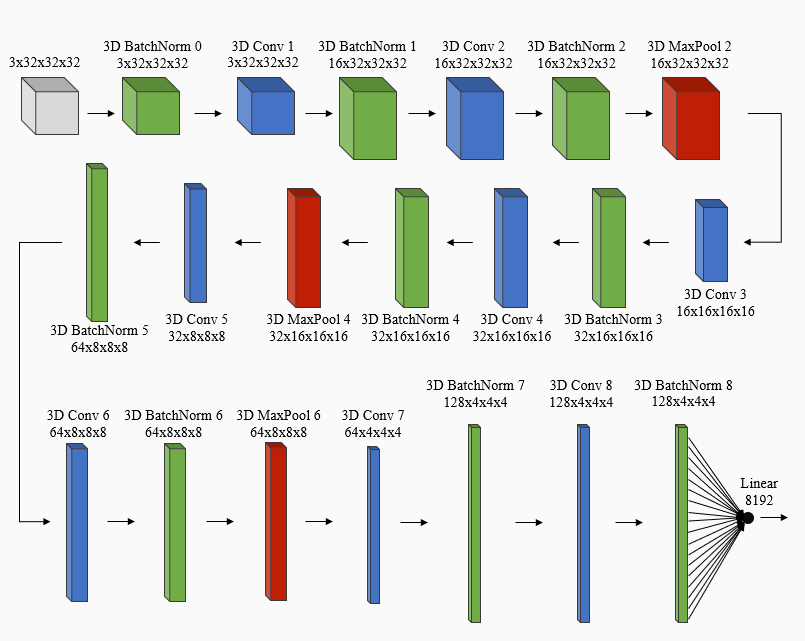
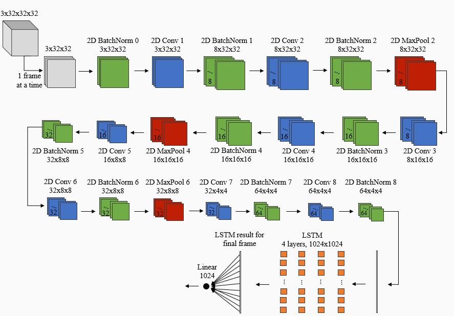

Deepfake Video Detection with Convolutional and Recurrent Networks
Methods and Algorithms
We developed three models, a 3D CNN, a convolutional LSTM or CNN-LSTM, and an ensemble of these two models, which are described in more detail below.
3D CNN
The 3D CNN model was designed from scratch and consists of 3D batchnorm, 3D convolutional, and 3D maxpool layers, utilizing PyTorch’s implementation for each of these types of layers. The network architecture for the 3D CNN model is shown below. The input to this model is the 32 frames extracted from each video. The network itself consists of a batchnorm layer, followed by 8 convolutional layers. After each convolutional layer is a batchnorm layer, and there is a maxpool layer after every other batchnorm layer, starting with the third batchnorm layer. In addition, directly after every batchnorm layer, except the first one, PyTorch’s leaky RELU activation function is applied to the result from the batchnorm layer. After the last batchnorm layer and activation function application, the result is flattened and passed to the last layer in the network, which is a linear layer with one output node. Finally, the video is predicted to be real if the output value is negative.
3D CNN Network Architecture
CNN-LSTM
The CNN-LSTM model consists of two components: a 2D CNN and an LSTM. The network architecture for the CNN-LSTM is shown below. For each video, each of the 32 frames extracted from that video is passed one at a time to a 2D CNN. The architecture of the 2D CNN is the same as the architecture for the 3D CNN, but uses 2D batchnorm, convolutional, and maxpool layers from PyTorch, rather than 3D layers. Next, the output of the 2D CNN is passed to the LSTM layer, where PyTorch’s LSTM implementation is used. In addition, the hidden state returned when passing the current frame to the LSTM layer is input to the LSTM layer for the next frame. Finally, the LSTM result for the last frame of the video is flattened and passed to a linear layer with one output node. Again, the video is predicted to be real if the output value is negative. The algorithm for passing each frame of a video into a 2D CNN and inputting the result to an LSTM is based on the forward pass for the model described in [8] for video classification.
CNN-LSTM Architecture
Ensemble
Since a 3D CNN and a CNN-LSTM learn to predict whether a video is real or fake through different means, creating an ensemble of these two methods could yield better performance than using only the 3D CNN or CNN-LSTM individually. Given a video, the ensemble predicts whether that video is real or fake by averaging the output of the 3D CNN and CNN-LSTM, then predicting the video is real if the result is negative. Traditionally, voting is used to determine the final prediction when employing an ensemble, where each model in the ensemble has one vote as to whether the video is real or fake and the final prediction is the class, in this case real or fake, with the most votes. However, since our ensemble contains only two models, we average the output values of the two models rather than use a voting scheme, in order to avoid ties, where one model predicts the video is real and the other predicts the video is fake.